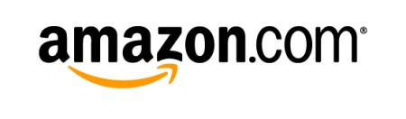
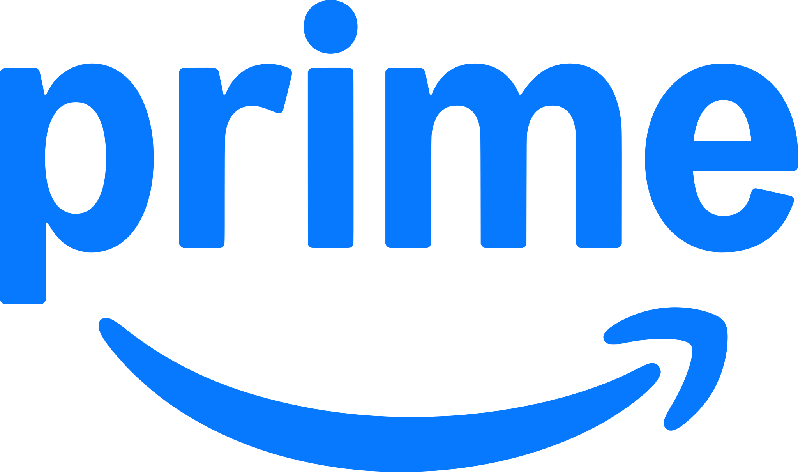

홈 > 브랜드 매거진 > 아마존
아마존
아마존은 쇼핑몰보다 고객의 기다림과 탐색 비용을 줄이는 시스템 브랜드에 가깝다. 상품 범위, 검색, 추천, 배송, 결제 경험이 하나로 연결되면서 브랜드의 가치는 편리함과 예측 가능성으로 축적된다. Kantar BrandZ 2026 Top 100에서 Amazon는 4위, 브랜드 가치는 US$1,022,820M, 전년 대비 변화율은 18%로 공표되었습니다.
산업 분야 리테일·커머스 · 공개 등급 편집 검수 · 브랜드 평가 4.7 ★

한눈에 보는 브랜드
아마존은 쇼핑몰보다 고객의 기다림과 탐색 비용을 줄이는 시스템 브랜드에 가깝다. 상품 범위, 검색, 추천, 배송, 결제 경험이 하나로 연결되면서 브랜드의 가치는 편리함과 예측 가능성으로 축적된다.
Kantar BrandZ 2026 Top 100에서 Amazon는 4위, 브랜드 가치는 US$1,022,820M, 전년 대비 변화율은 18%로 공표되었습니다.
브랜드 관점
아마존은 쇼핑몰보다 고객의 기다림과 탐색 비용을 줄이는 시스템 브랜드에 가깝다. 상품 범위, 검색, 추천, 배송, 결제 경험이 하나로 연결되면서 브랜드의 가치는 편리함과 예측 가능성으로 축적된다.
시작과 성장
제프 베조스가 1994년 시애틀에 설립한 미국의 전자상거래를 기반으로 한 IT 기업. 도서를 비롯하여 다양한 상품은 물론 전자책, 태블릿 PC를 제조 판매하며, 기업형 클라우드 서비스도 제공하고 있다.
제품과 서비스
아마존 에코, 아마존 프라임, 아마존 비디오, ComiXology, 아마존 웹 서비스, 알렉사 인터넷, 아마존 앱스토어, 아마존 킨들
타임라인
BI/CI 변천사
 BI/CI 아카이브BI/CI 아카이브
BI/CI 아카이브BI/CI 아카이브
BI/CI 아카이브BI/CI 아카이브